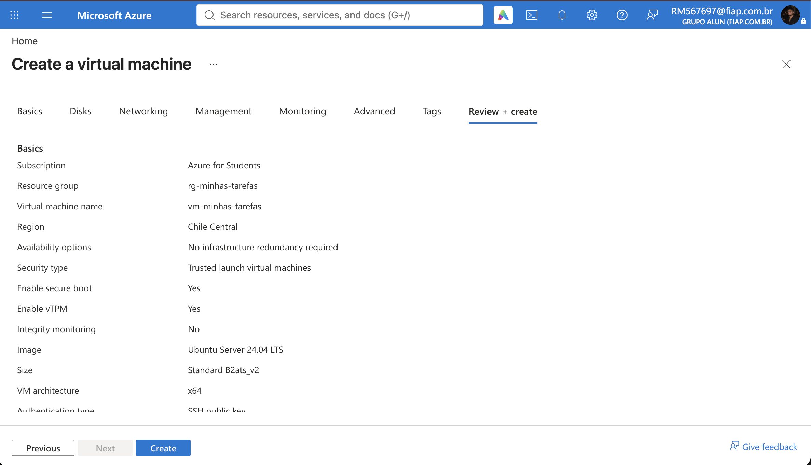
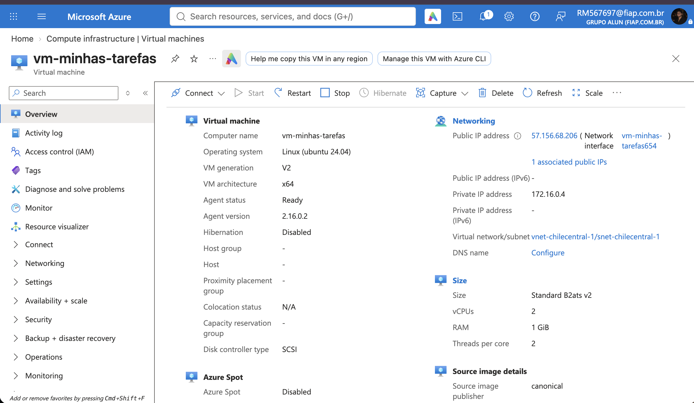
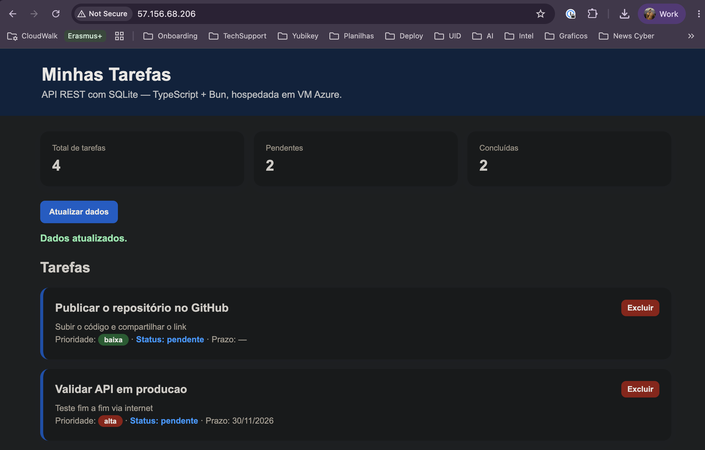
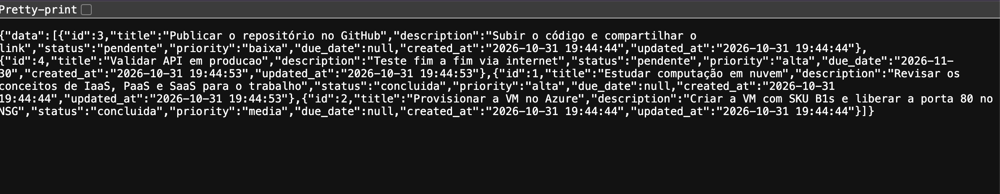
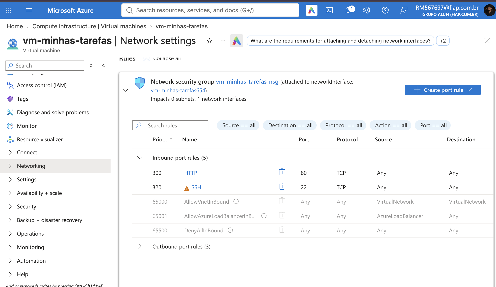
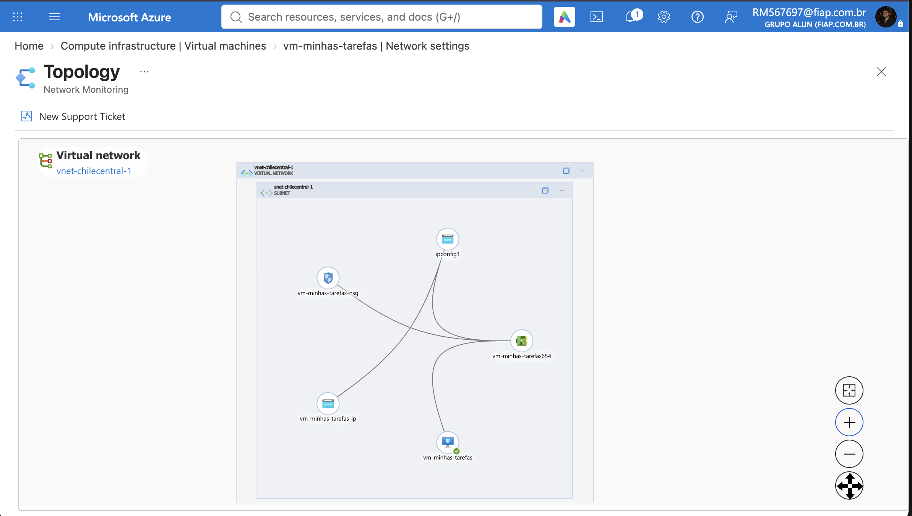
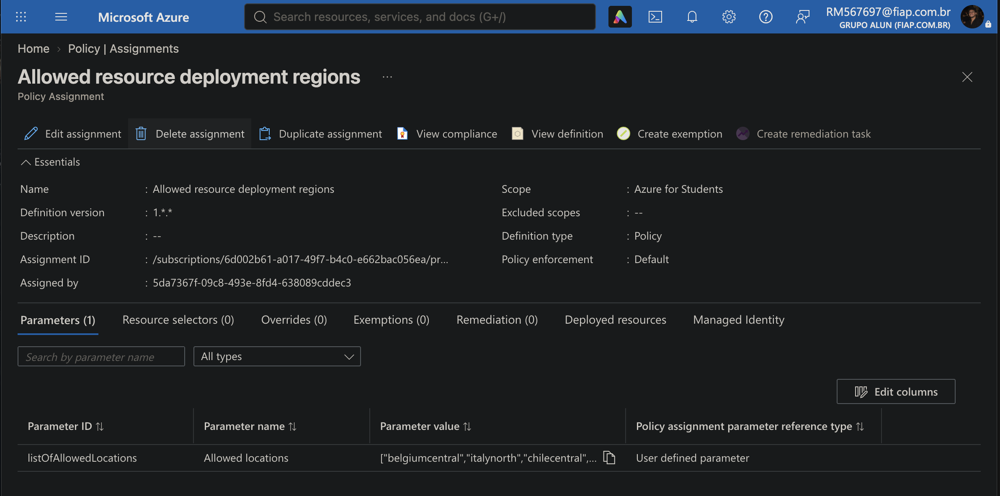

FIAP
Faculdade de Informática e Administração Paulista
Kaior Ramos Rodrigues Barreto
RM 567697
CLOUD SECURITY PREVENTION
E DEVSECOPS
Minhas Tarefas: API REST com banco de dados SQLite
hospedada em máquina virtual Azure, de ponta a ponta
Trabalho acadêmico (GS)
Computação em Nuvem
Professor: Eduardo Popovici
São Paulo
Outubro de 2026
Este trabalho desenvolve e hospeda, de ponta a ponta em nuvem pública, uma API REST com banco de dados SQLite, aplicando práticas de prevenção e segurança em nuvem (cloud security prevention) e de integração da segurança ao processo de desenvolvimento e operação (DevSecOps). A API, escrita em TypeScript e executada pelo runtime Bun, oferece operações CRUD completas, com validação de entrada, exclusão protegida por confirmação e dashboard de acompanhamento, e conta com 19 testes automatizados aprovados. A hospedagem em máquina virtual Azure (SKU Standard_B2ats_v2, região Chile Central) segue princípios de prevenção: superfície de rede mínima com NSG, autenticação SSH por chave, execução do serviço sem privilégios de root e persistência do banco de dados fora do código. Todo o provisionamento foi automatizado em script único, versionado junto com o código, os testes, as evidências e este relatório em repositório GitHub público. Os resultados comprovam a API em produção, acessível pela internet e validada de fora da nuvem.
Palavras-chave: computação em nuvem; segurança em nuvem; DevSecOps; API REST; SQLite; Microsoft Azure.
| 1 INTRODUÇÃO | 4 |
| 2 OBJETIVOS | 4 |
| 3 ARQUITETURA DA SOLUÇÃO | 4 |
| 4 TECNOLOGIAS UTILIZADAS | 5 |
| 5 MODELO DE DADOS | 6 |
| 6 A API REST | 7 |
| 7 ELEMENTOS DE COMPUTAÇÃO EM NUVEM | 9 |
| 8 HOSPEDAGEM DE FIM A FIM: PASSO A PASSO | 12 |
| 9 OPERAÇÃO EM PRODUÇÃO | 13 |
| 10 EVIDÊNCIAS DOS ELEMENTOS DE NUVEM NO PORTAL | 13 |
| 11 TESTES AUTOMATIZADOS | 14 |
| 12 PROBLEMAS ENFRENTADOS E RESOLUÇÃO (TROUBLESHOOTING) | 15 |
| 13 CONCLUSÃO | 15 |
| REFERÊNCIAS | 16 |
Este trabalho apresenta o desenvolvimento e a hospedagem de uma API REST completa, com banco de dados SQLite, em uma máquina virtual do Microsoft Azure, abrangendo todo o ciclo: modelagem de dados, implementação, testes automatizados, provisionamento de infraestrutura em nuvem, publicação e validação de ponta a ponta pela internet.
A aplicação, batizada de Minhas Tarefas, é um gerenciador de tarefas com operações CRUD completas, validação de dados, exclusão protegida por confirmação e dashboard de indicadores. Inspirado no material didático da disciplina, o repositório minha-frota (POPOVICI), que demonstra uma API local em Python com SQLite, este trabalho segue a mesma filosofia de simplicidade e a estende ao cenário real de nuvem, com a API publicada em uma VM Azure acessível de qualquer lugar do mundo.
Todos os artefatos do trabalho estão versionados em repositório público no GitHub, incluindo o código-fonte, os testes, os scripts de provisionamento, as evidências em forma de capturas de tela e esta documentação em PDF.
Os objetivos do trabalho, conforme os requisitos propostos, são:
A arquitetura adotada é a mais simples possível que ainda atende ao requisito de hospedagem real: uma única máquina virtual IaaS na nuvem executando a aplicação com o banco de dados no mesmo disco. Não há balanceadores, filas ou microsserviços; a simplicidade é deliberada e adequada à escala do problema.
O cliente (navegador ou ferramenta de linha de comando) acessa a API pela internet na porta 80. O Grupo de Segurança de Rede (NSG) filtra o tráfego, permitindo apenas as portas 80 (HTTP) e 22 (SSH). Dentro da VM, o systemd mantém o processo da API sempre ativo, o runtime Bun executa a aplicação escrita em TypeScript e o banco SQLite persiste as tarefas em arquivo no disco gerenciado, fora do diretório do código.
Figura 1. Arquitetura da solução, do cliente até o banco de dados na VM Azure.
As tecnologias escolhidas priorizam simplicidade, modernidade e ausência de dependências externas de execução:
| Tecnologia | Papel | Justificativa |
|---|---|---|
| TypeScript | Linguagem | Linguagem de programação utilizada no trabalho; a tipagem estática reduz erros durante o desenvolvimento e é amplamente adotada no mercado. |
| Bun 1.4 | Runtime | Runtime moderno que executa TypeScript nativamente, sem etapa de compilação, com servidor HTTP e cliente SQLite embutidos, de modo que o projeto não tem nenhuma dependência de execução. |
| Bun.serve() | Servidor HTTP | Servidor web nativo do Bun, no lugar de frameworks como Express; mantém o código enxuto e o empacotamento trivial para a VM. |
| SQLite (bun:sqlite) | Banco de dados | Banco relacional embutido em um único arquivo, requisitado no trabalho; o driver faz parte do runtime, sem instalação de servidor de banco separado. |
| systemd | Gerenciamento do serviço | Inicializa a API junto com o boot da VM, reinicia o processo em caso de falha e roda na porta 80 sem privilégios de root. |
| Microsoft Azure | Nuvem pública | Provedor utilizado para hospedar a API de fim a fim, com assinatura Azure for Students. |
Tabela 1. Tecnologias utilizadas e suas justificativas.
Em relação ao material didático de referência, escrito em Python puro com biblioteca padrão e executado apenas localmente, a escolha do TypeScript com Bun segue a mesma filosofia (uma API sem dependências externas), agregando os elementos de nuvem exigidos: máquina virtual, disco gerenciado, rede e IP público.
O banco de dados possui uma única tabela, tasks, criada automaticamente no primeiro início da aplicação. Além da chave primária e dos campos de negócio (título, descrição, situação, prioridade e prazo), o esquema define restrições de integridade no próprio SQLite: a situação e a prioridade só aceitam valores pré-definidos (constraints CHECK), o título não pode ser vazio e há um índice para acelerar consultas por situação.
CREATE TABLE IF NOT EXISTS tasks (
id INTEGER PRIMARY KEY AUTOINCREMENT,
title TEXT NOT NULL CHECK(length(trim(title)) > 0),
description TEXT,
status TEXT NOT NULL DEFAULT 'pendente'
CHECK(status IN ('pendente','concluida','cancelada')),
priority TEXT NOT NULL DEFAULT 'media'
CHECK(priority IN ('baixa','media','alta')),
due_date TEXT,
created_at TEXT NOT NULL DEFAULT CURRENT_TIMESTAMP,
updated_at TEXT NOT NULL DEFAULT CURRENT_TIMESTAMP
);
CREATE INDEX IF NOT EXISTS idx_tasks_status ON tasks(status);
Figura 2. Modelo de dados (entidade tasks) com restrições de integridade.
No primeiro início, a aplicação semeia automaticamente três tarefas de demonstração, o que facilita os primeiros testes da API e a validação visual do dashboard, comportamento inspirado no material didático de referência.
A API expõe as operações CRUD sobre o recurso tasks, além de um verificador de saúde (health check), um painel de indicadores e a interface web. Todas as respostas seguem um padrão único: sucessos no envelope {"data": ...} e erros em {"error": {"code": ..., "message": ...}}.
| Método | Rota | Descrição |
|---|---|---|
| GET | / | Interface web (dashboard HTML) com indicadores e lista de tarefas. |
| GET | /api/health | Status da API, caminho do banco e host, usado para monitoramento. |
| GET | /api/tasks | Lista todas as tarefas; aceita filtro opcional ?status=. |
| POST | /api/tasks | Cria uma tarefa com validação de campos; responde 201 com o registro criado. |
| GET | /api/tasks/{id} | Detalha uma tarefa; 404 se não existir. |
| PUT | /api/tasks/{id} | Atualização parcial com lista branca de campos; atualiza updated_at. |
| DELETE | /api/tasks/{id} | Exclui a tarefa, exigindo confirmação ?confirm=true; sem ela, responde 409. |
| GET | /api/dashboard | Contadores agregados: total, pendentes, concluídas e canceladas. |
Tabela 2. Rotas da API REST.
A exclusão exige confirmação explícita por parâmetro de consulta, comportamento que previne remoções acidentais por chamadas equivocadas: se o cliente tentar excluir sem ?confirm=true, a API responde 409 Conflict com o código confirmation_required e a tarefa permanece intacta.
Figura 3. Fluxo de requisições: criação validada e exclusão protegida por confirmação.
A seguir, exemplos reais capturados durante a validação em produção, contra o endereço público da VM:
$ curl -s -X POST http://57.156.68.206/api/tasks \
-H "Content-Type: application/json" \
-d '{"title":"Validar API em producao","priority":"alta","due_date":"2026-11-30"}'
{"data":{"id":4,"title":"Validar API em producao",
"description":"Teste fim a fim via internet","status":"pendente",
"priority":"alta","due_date":"2026-11-30",
"created_at":"2026-10-31 19:44:53","updated_at":"2026-10-31 19:44:53"}}
$ curl -s -X DELETE http://57.156.68.206/api/tasks/3
{"error":{"code":"confirmation_required",
"message":"Confirme a exclusão com ?confirm=true."}}
$ curl -s http://57.156.68.206/api/dashboard
{"data":{"total":4,"pendentes":2,"concluidas":2,"canceladas":0}}
Esta seção explica cada elemento de nuvem provisionado no trabalho, conforme os requisitos: computação (máquina virtual e seu SKU), armazenamento, rede, região e a linguagem de programação utilizada.
| Elemento | Especificação | Observação |
|---|---|---|
| Computação (VM) | vm-minhas-tarefas, SKU Standard_B2ats_v2 (2 vCPU, 1 GiB RAM) | Série B (burstable), ideal para cargas leves; custo de US$ 0,0132/hora. |
| Sistema operacional | Ubuntu Server 24.04 LTS (x64, Trusted Launch) | Distribuição Linux de suporte de longo prazo, sem custo de licença. |
| Armazenamento | Disco gerenciado SSD Standard de 30 GB | O banco SQLite persiste em /var/lib/minhas-tarefas/tasks.sqlite3, separado do código-fonte. |
| Rede | VNet vnet-chilecentral-1, sub-rede snet-chilecentral-1, IP público 57.156.68.206, NSG com portas 80 e 22 | O NSG filtra o tráfego: apenas HTTP e SSH chegam à VM. |
| Região | Chile Central | Região permitida pela assinatura de estudante e a mais próxima do Brasil, reduzindo a latência. |
| Processo | Serviço systemd minhas-tarefas.service | Inicialização automática no boot, reinício em falhas e execução da porta 80 sem root. |
| Linguagem | TypeScript 5 executado pelo runtime Bun 1.4 | Sem dependências externas de execução; servidor e banco usam módulos nativos. |
Tabela 3. Elementos de nuvem provisionados.
Computação. A máquina virtual é o elemento central de IaaS (Infraestrutura como Serviço): em vez de comprar hardware, alocou-se uma VM sob demanda. O SKU (Stock Keeping Unit) Standard_B2ats_v2 identifica o tamanho da instância na série B, com 2 vCPUs e 1 GiB de memória. Tamanhos da série B são burstable: operam com baixo consumo contínuo de CPU e acumulam créditos para picos, perfil adequado para uma API de pequeno volume, cuja ocupação real de memória ficou em torno de 50 MB.
Armazenamento. O disco do sistema é um managed disk SSD Standard de 30 GB, com replicação local (LRS). Ele hospeda o sistema operacional, o código em /opt/minhas-tarefas e o banco de dados: o SQLite grava em arquivo único, mantido fora do diretório do código em /var/lib/minhas-tarefas/. Essa separação entre aplicação e dados persiste mesmo com reinícios ou reimplantações da aplicação.
Rede. A VM está em uma rede virtual privada (VNet) com sub-rede dedicada, exposta à internet por um endereço IP público. O Grupo de Segurança de Rede atua como firewall stateful: apenas as portas 80 (HTTP, para a API e o dashboard) e 22 (SSH, para administração) estão liberadas; todo o restante do tráfego é descartado. Essa é a superfície mínima de exposição necessária para o funcionamento do trabalho.
Região. A região Chile Central foi escolhida entre as cinco permitidas pela política da assinatura Azure for Students (detalhes na seção 12) por ser a única nas Américas e, portanto, a de menor latência para acesso a partir do Brasil.
Os custos estimados do ambiente, com a VM ligada ininterruptamente, são:
| Recurso | Custo mensal estimado (730 h) | Observação |
|---|---|---|
| VM Standard_B2ats_v2 (Linux) | US$ 9,64 | US$ 0,0132 por hora ligada. |
| Disco gerenciado SSD Standard 30 GB | ≈ US$ 4,80 | Cobra mesmo com VM desalocada (mantém os dados). |
| Endereço IP público | ≈ US$ 3,65 | US$ 0,005 por hora alocado. |
| Total estimado | ≈ US$ 18 | Coberto pelos US$ 100 de crédito do Azure for Students. |
Tabela 4. Custos estimados do ambiente em nuvem (valores aproximados).
Para economizar crédito, a VM pode ser desalocada (comando Stop no portal) nos períodos em que não está em uso: nesse estado não há cobrança de computação, restando apenas o custo do disco. Ao religá-la, o serviço systemd sobe a API automaticamente e o banco de dados permanece intacto.
Segurança e prevenção (DevSecOps). Práticas de prevenção foram integradas do desenvolvimento à operação. Na aplicação: validação de entrada com lista branca de campos (evita injeção e atribuição em massa), consultas SQL parametrizadas, exclusão protegida por confirmação e limite de tamanho no corpo das requisições. Na infraestrutura: autenticação SSH somente por chave, NSG com superfície mínima (apenas portas 80 e 22), serviço executando sem privilégios de root (systemd com capacidade restrita CAP_NET_BIND_SERVICE) e banco em partição separada do código. No processo: provisionamento automatizado por script versionado, testes automatizados no fluxo de desenvolvimento e evidências documentadas, tornando todo o ciclo auditável e reproduzível.
A hospedagem foi realizada integralmente pelo portal do Azure, na assinatura Azure for Students, e complementada por provisionamento automatizado via SSH. O passo a passo executado foi:
rg-minhas-tarefas, que agrupa todos os recursos do trabalho;vm-minhas-tarefas na região Chile Central, com imagem Ubuntu Server 24.04 LTS e tamanho Standard_B2ats_v2, autenticação por chave SSH (par de chaves vm-minhas-tarefas_key) e portas de entrada HTTP (80) e SSH (22) liberadas;deploy/provision.sh, que em um único comando: instala o runtime Bun na VM, copia o código da aplicação para /opt/minhas-tarefas, prepara o diretório de dados /var/lib/minhas-tarefas, instala o serviço minhas-tarefas.service no systemd e executa os testes de saúde;
Figura 4. Formulário de criação da máquina virtual no portal Azure.

Figura 5. Visão geral da VM em execução, com IP público e região visíveis.
Após o provisionamento, a API passou a responder de ponta a ponta no endereço http://57.156.68.206, acessível de qualquer rede. O dashboard em / consolida os indicadores do banco em tempo real, e os endpoints REST responderam corretamente a todas as operações testadas pela internet: criação (201), atualização (200), exclusão protegida (409 sem confirmação e 204 com ?confirm=true), consultas com filtro, painel de indicadores e health check.

Figura 6. Dashboard da aplicação em produção, acessado pela internet (http://57.156.68.206).

Figura 7. Endpoint GET /api/tasks respondendo em JSON direto do navegador.
As capturas a seguir comprovam os elementos de nuvem descritos na seção 7: as regras de entrada do NSG, com as portas 80 e 22, e a topologia de rede completa criada pelo Azure para o trabalho (VNet, sub-rede, interface de rede e IP público). As demais evidências, incluindo configurações detalhadas da VM e da rede, estão na pasta evidence/ do repositório.

Figura 8. Configurações de rede da VM: portas 80 e 22 liberadas no NSG.

Figura 9. Topologia da rede criada: VNet vnet-chilecentral-1, sub-rede e IP público.
O projeto possui uma suíte de testes automatizados executada com o comando bun test. Os testes de integração sobem um servidor real em porta aleatória com banco SQLite em diretório temporário (descartado ao final) e exercitam a API por HTTP, e testes de unidade validam diretamente as regras de validação de dados. Resultado da última execução: 19 testes aprovados, 0 falhas, 41 asserções.
A cobertura inclui:
?confirm=true;Dois problemas reais de nuvem foram enfrentados durante a hospedagem. Primeiro, nos Estados Unidos, os tamanhos recomendados de VM apareciam como indisponíveis para a assinatura (NotAvailableForSubscription) e a implantação no East US falhou com RequestDisallowedByAzure: a assinatura Azure for Students aplica a política Allowed resource deployment regions, que restringe a criação de recursos a um conjunto específico de regiões, variável por assinatura.
A resolução veio pela própria governança do Azure: em Policy → Assignments, a atribuição da política expõe o parâmetro listOfAllowedLocations com a lista exata de regiões liberadas. No caso desta assinatura, apenas cinco regiões eram permitidas (Bélgica, Norte da Itália, Chile, França e Espanha) e nenhuma delas nos Estados Unidos ou no Brasil. A região Chile Central foi escolhida por ser a única nas Américas, minimizando a latência a partir do Brasil. Com a região correta, o tamanho B2ats_v2 apareceu disponível e a implantação foi concluída sem erros.

Figura 10. Política de regiões permitidas da assinatura, consultada em Policy → Assignments.
O episódio ilustra um aspecto importante de nuvem pública: as assinaturas patrocinadas (estudantis) têm restrições de governança próprias, e o diagnóstico correto exige ler a política aplicada em vez de tentar regiões ao acaso.
O trabalho cumpriu integralmente os objetivos propostos. A API REST de tarefas foi desenvolvida em TypeScript com o runtime Bun e banco de dados SQLite, sem dependências externas de execução; possui operações CRUD completas, validação de dados, exclusão protegida por confirmação, dashboard web e 19 testes automatizados aprovados. A hospedagem de fim a fim foi realizada em uma máquina virtual Azure (SKU Standard_B2ats_v2, região Chile Central), exposta à internet por IP público e protegida por NSG, com o serviço gerenciado pelo systemd e o banco persistindo em disco gerenciado separado do código.
Além do resultado funcional, com a API respondendo de qualquer lugar em http://57.156.68.206, o percurso proporcionou experiência prática com os elementos centrais da computação em nuvem: escolha de SKU com base em preço e capacidade, armazenamento em disco gerenciado, configuração de rede e segurança, economia por desalocação e o diagnóstico de restrições de governança da assinatura, resolvido com base na documentação oficial. O conjunto final de código, testes, scripts de provisionamento, evidências e relatório está versionado em repositório público no GitHub, servindo de registro completo e reproduzível do trabalho.
POPOVICI, Eduardo. minha-frota: material didático da disciplina. Disponível em: https://github.com/edupopov/minha-frota. Acesso em: out. 2026.
BUN. Bun Documentation. Disponível em: https://bun.com/docs. Acesso em: out. 2026.
SQLITE. SQLite Documentation. Disponível em: https://www.sqlite.org/docs.html. Acesso em: out. 2026.
MICROSOFT. Azure Virtual Machines: documentação. Disponível em: https://learn.microsoft.com/azure/virtual-machines/. Acesso em: out. 2026.
MICROSOFT. Azure for Students. Disponível em: https://azure.microsoft.com/free/students/. Acesso em: out. 2026.
MICROSOFT. Azure Retail Prices API. Disponível em: https://prices.azure.com. Acesso em: out. 2026.